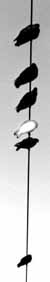

| Patent Awarded for Zero-Point Energy
Extraction
On December 31, 1996 U.S. Patent Number 5,590,031 was awarded to Franklin B. Mead Jr. and Jack Nachamkin for a system for converting electromagnetic radiation energy to electrical energy. The full details can be seen at the U.S. Patent and Trademark Office Website. Tom Bearden comments:  Don't know if it was the first, but it's not a big deal. It is, however, a proof of principle in that it definitely proves that there are ways to extract usable EM energy from the vacuum. It only takes one white crow to prove that not all crows are black! And that is definitely a fine little white crow.Calls for sticking a little antenna between two close conducting plates. This uses the well-known Casimir effect, proven in the literature now for some time, which shows that the vacuum energy changes between those two plates. So there's a wee, wee bit of energy there, if one makes such a tiny near microscopic little wire coil antenna. One will really get a tiny, tiny bit of EM energy out of it, for free once the transducer is made. It's legitimate, but nothing that will ever power anything of any substance. Not even a watch. But the PRINCIPLE is there! The white crow is there and out of the box forever. But in considering electrostatics so staid these days, electrodynamicists have missed the greatest bonanza of all time in the energy field. The real way to extract gobs of usable EM energy from the vacuum is just make a little dipole, with its little static potential between its ends. I looked at the Whittaker decomposition of the scalar potential between the ends of the dipole, and voila! The gol-darndest true negative resistor the mind of man ever imagined is sitting there in that silly little dipole! Extracts incredible amounts of EM energy flow, when one includes the entire flow (pouring out of the terminals of the dipole) and not just the tiny, tiny component of it that slides along the wires of an external circuit that may be connected, strikes the surface charges in those wires, and thereby gets diverged into the wires to power the Drude electrons and therefore the circuit. I went back to the original Heaviside and Poynting papers. Heaviside knew of this incredible vast EM energy flow associated with every dipolar circuit, a far greater flow of EM energy than what we thought to have "input" to the system by any means. But there was no way known to man (at the time) to explain where such a gigantic energy flow could possibly come from. Poynting never even considered anything but that tiny little tad that strikes the surface charges and gets diverged into the circuit. He STARTED with the assumption of the EM energy that entered the circuit, and nothing else. He also got the "energy flow" vector direction wrong by a quadrant, and was corrected by Heaviside. Lorentz could see the giant flow (Heaviside component) but had no explanation at all of where it could be coming from! He therefore reasoned it "had no physical significance" since it did not even strike the circuit, but missed it entirely and just roared on off into space and was wasted. So he set up a neat little integration of the energy flow vector itself around a closed surface surrounding any little volume of interest. Voila! That arbitrarily discarded that worrisome huge unexplainable Heaviside flow component, and retained only the tiny Poynting captured flow component. That way, the scientific community would not destroy them for ostensibly advocating gross violation of the conservation of energy law. Apparently no one ever went back and applied the Whittaker decomposition to the scalar potential between the poles of the dipole, until I did. And it took me 20 years to realize one ought to try that! But when one does, suddenly one has the most marvelous energy discovery imaginable! What is violated by the dipole is the 3-space energy flow conservation, but 4-space energy flow conservation which is maintained at all times. Now that we know about electrons and atoms and nuclei (they were not even discovered when all this was going on with Heaviside and Poynting and Lorentz), we also know about the spin of the charges. They spin 720 degrees in making one complete rotation, not 360 degrees! In short, the charge spins 360 degrees in the complex plane, then another 360 degrees in the real plane. Thus it can absorb EM energy flow from the complex plane while it is in that plane, and re-emit it in real 3-space as real EM energy flow while it is in real space! In short, the charge spin is a transducer of "reactive power" (electrical engineer's term) into "real power". And in electrical engineering terms, the Whittaker decomposition of that little "static" potential between the ends of the dipole, shows that the dipole is continually receiving "reactive" power from the vacuum, transducing it into real power, and outputting that in all directions as a free flow of energy. Generators and batteries do not use their available internal energy to power loads or external circuits! Instead, they use the internal energy to dissipated in performing work upon their internal charges to separate them and form the source dipole. That is all that the chemical energy in a battery, or the shaft energy input to a generator, does. It does not add the first watt of itself to the power line! Every electrical load and circuit is and always has been powered by EM energy extracted directly from the vacuum by the source dipole once made. The dipole fills all space surrounding the external circuit (see Kraus, Electromagnetics, 4th edition) with an enormous flow of EM energy extracted and transduced from the vacuum. The tiny bit caught by the feebly intercepting circuit is what powers the loads and losses (half of it is used for that; the other half is used only to kill the source dipole again, due to the use of a closed current loop circuit where the external loads and losses are in the same closed current loop as the source dipole in the battery or generator. So our diabolically designed power systems destroy the source dipole -- and the flow of energy -- faster than they power the loads. That is not the way to run the railroad! We also (in particle physics, not electrodynamics) have known for nearly a half century that any dipole is a broken symmetry (3-spatial) in the fierce exchange of energy between the vacuum and the charge. That rigorously means that some of the disordered energy (QM vacuum view) that is continually received by the charge, is re-emitted as ordered, macroscopic EM energy flow. So here the dipole is a transducer of "virtual energy" (vacuum energy) into "observable energy" -- which is precisely what is required to extract real, usable EM energy from the seething vacuum. So with either the classical or QM view, the source dipole is a wondrous negative 4-resistor, extracting usable EM energy from the active vacuum, and pouring it out freely in all directions indefinitely. Any isolated charge is actually a dipole also. From quantum electrodynamics, clustered around the observable charge are virtual charges of opposite sign, thus "polarizing the vacuum" as they say. One can take one of the clustering vacuum charges, and an appropriate piece of the observable "isolated" charge, and voila! That is a composite dipole (composite meaning one end is a virtual charge and the other is a very tiny piece of observable charge). So the charge is actually a set of clustered composite dipoles. Well, each of those little composite dipoles has a scalar potential between its little ends, hence that scalar potential can be decomposed by the Whittaker method into bidirectional longitudinal EM waves. The charge is thus an entire set of negative 4-resistors. Half of those Whittaker EM longitudinal EM waves inflowing to the dipole are in the complex plane, and they continuously pour into the charge (composite dipole) or into the real dipole. The dipole (via the 760 degree spin of its charges) transduces this incoming complex plane EM energy (actually coming in from within the flow of time) into a real outpouring of EM energy from the dipole. So by making a little dipole, we do an enormously important thing. First, we note that the extra and arbitrary condition of 3-space symmetry that we usually impose upon nature's EM energy flow, in addition to its natural 4-space primary energy flow symmetry (as in Whittaker's decomposition), destroys the ability of nature to perform negentropy for us. It enforces entropic engineering. This means that, if we insist on conserving energy flow in 3-space, we have to furnish energy to do entropic work and wrestle nature brutally to the mat, protesting all the while, and she fights us fiercely all the way by producing a Newtonian third law reaction in the offending "force" system or causative agent. Now when we stop that nonsense, and pay just a little bit of "entropic" nature to INITIALLY BREAK THAT EXTRA, ARBITRARY 3-space EM energy flow symmetry, nature leaps for joy! She joyously reverts to her more primary energy flow symmetry -- the giant circulation of energy flow I described by applying the Whittaker decomposition, with enormous EM energy flowing into the dipole from the complex plane (from the ict axis) and pouring out in 3-space at the speed of light in all directions, thereby producing the fields and potentials associated with the charge (composite dipole) and resolving Heaviside's and Lorentz's problem of how all that energy comes out of there, without violating conservation of energy. Understand, this dipole allows us to freely break and violate the daylights out of 3-space EM energy flow! Nature gratefully pours out for us this continuing enormous flow of energy, transduced from the 4th dimension inflow, just from that simple thing of making a little dipole. She will continue pouring out the real, usable EM energy flow forever, so long as we do not destroy the dipole but just leave it intact. Some of the dipoles in the original matter of the newly formed universe, have been pouring out energy in that manner for some 15 billion years, and they still are doing it unabated. But there's another magic thing. The moment we formed the dipole, immediately this fundamental 4-flow and 4-symmetry appeared, with broken 3-symmetry and permissibly nonconserved 3-flow of the EM energy. It appeared in the immediate and ongoing Whittaker deterministically structured energy of the vacuum. So speeding from that dipole at the speed of light in all directions, is a negentropic reordering of a substantial portion of the vacuum energy. Make a silly little dipole, and in absolute joy nature will set about reordering an appreciable fraction of the vacuum's disordered energy, spreading out in all directions from that dipole at the speed of light. If we wait one year, with the little dipole sitting on the shelf, we will have a sphere of radius 1 light year, in which a substantial portion of the vacuum energy has been reordered into the 4-symmetry EM flow structure. And the reordering is still spreading beyond that radius at the speed of light. In short, to do entropic engineering, we have to furnish the energy, fight nature to the mat, and lose some of the energy in the process. We can never even break even in a real system with losses. In a perfect system with no losses, best we can do is break even, because of the enforced 3-space symmetry in the EM energy flow (which all our EM power system designers have always assumed, erroneously). There is a law of nature that requires that energy flow be conserved. It does not require that energy flow be conserved in 3-space! Just in 4-space. Assuming 3-space energy flow conservation is an additional requirement that shackles nature's feet and prevents her from performing her beloved reordering of much of the universal vacuum energy at light speed. So if we "make" entropy, we have to provide energy to do work, so we pay for it every step of the way and then some. But if we "make" negentropy, we have to "do" negative work. Voila! "Doing negative work" is merely receiving the free flow of reordered energy that nature copiously provides us! And nature begins reordering much of the vacuum energy, in all directions, at the speed of light, and continues so long as the little dipole is allowed to exist. And we only had to pay once for the little dipole. Peanuts! To make entropy, you have to pay nature, joule for joule. To make negentropy, nature pays you, and pays you handsomely, once you merely pay for the little initiator. And she will keep on paying you handsomely indefinitely, so long as you do not destroy the little initiator. So guess what all our power system engineers design: Systems which continuously destroy their little initiators, after paying for them, so that they have to continuously keep paying for them. But with giant negentropy, suddenly there is no energy problem! We can now guarantee -- in the simplest and cheapest way possible -- negentropic engineering, to directly engineer the vacuum energy and reorder a large bit of it, continually spreading, while receiving enormous real EM energy flow pouring out of the dipole, for free. We can do this anywhere, anytime, easily and cheaply. That is the total and permanent solution to the first half of the energy crisis and the oil crisis: making copious EM energy flow available from the vacuum, anywhere, any time, with ridiculous ease and ridiculously cheaply. That capability is now achieved, and it will never have to be puzzled over again. It was always there, but just never before understood because no one used a Whittaker decomposition of that little scalar potential between the ends of a dipole. The second problem (remaining) is how to intercept and collect lots more of this freely available EM energy flow from the vacuum, in our circuits and devices, and without using half of it to destroy the source dipole faster than we power the loads!. In my paper to be published in IC-2000 in Russia in July, I gave some 15 or so different ways to legitimately approach solving that problem. Some of them are already proven and in the hard literature. For example, the Bohren experiment gives a COP = 18, so that 18 times as much energy comes out of there as is input by present accounting. Scientists no longer realize that the input energy was not what we calculated -- since we use only the Poynting component -- but was far greater because of the presence of the unaccounted Heaviside component. Bohren resonated the charge, so it physically sweeps out a greater geometrical reaction cross section in space, thus reaching outside the static charge's reaction cross section (which was what was used to calculate our "input energy") and thus collecting some of the available but unaccounted Heaviside component. If we can now get a Manhattan project, we can get real solutions to this terrible energy problem, quickly and permanently, including in time to avoid the coming economic collapse about 8 years hence, if only the present "business as usual" things continue as they are going now. And we can dramatically reduce the pollution of the biosphere, and even clean up the biosphere a great deal in the process. That's why the U.S. needs that Presidential Decision Directive, a Manhattan Energy from the Vacuum Project moving intensely and well-funded and staffed, and the authority to use whatever invention or process is necessary, taking care of accounting and just compensation to inventors etc. later. That can only be done under something like a national emergency declaration, which definitely should be issued by the President if we are to have the necessary time to prevent the economic collapse of most of the world about 8 years from now, and possibly the destruction of civilization just before that as conflicts between nations intensify under such pressures and the nuclear and WMD arsenals of the 25 nations having WMDs are unleashed. But we now have the solution, if we can get the project formed and moving at high speed. Anyway, I'm extremely fatigued, working very long hours -- but also elated at this breakthrough progress. We have the long-needed key, at last! It's a doable. This problem can be solved, and pumped out there quickly. We can do it just in the nick of time, and prevent the coming destruction of civilization and much of the biosphere. So now we have to somehow get the Administration's attention, the legislative branch's attention, etc. We have to have our government clearly see what is coming upon us if we do not act at all speed possible. And we have to get a sense of grave urgency, so we get that Manhattan Energy project exploding out of the chute at full speed down the racetrack. |